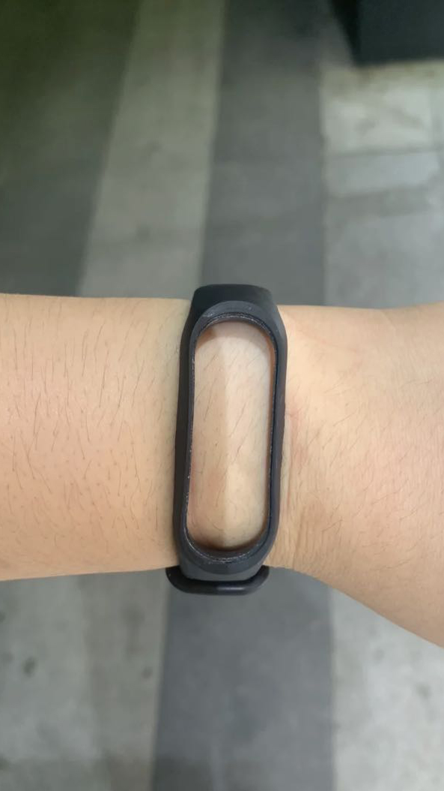
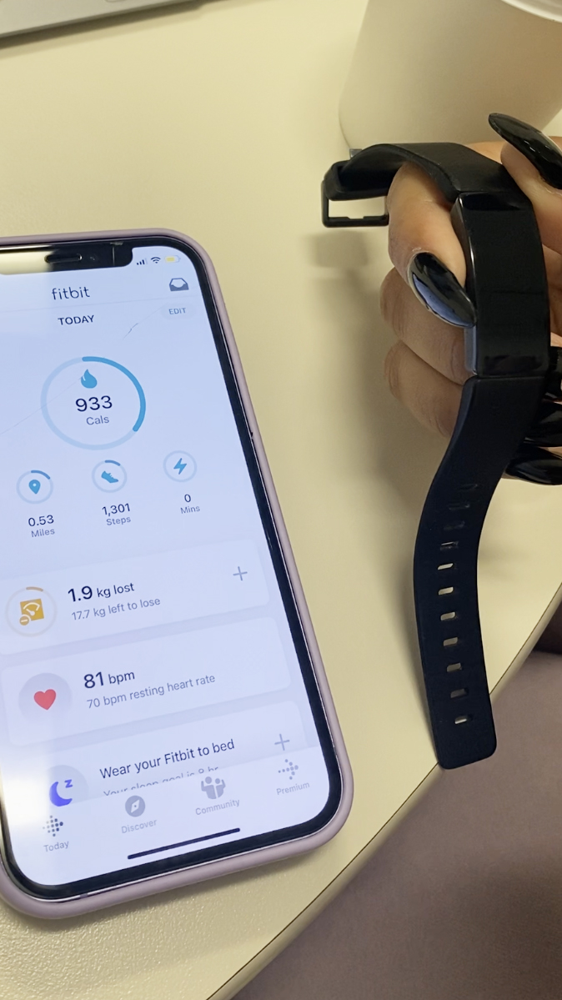

Home
Interview
Media
By Sandra Qin
With Vidushi
October 04 2022

Sandra
Hi, I'm Sandra, and today I'm going to do an interview about Fitbit with Vidushi I have over here.
Hi, Vidushi. Could you kind of introduce yourself and introduce us about Fitbit?
Vidushi
Hi, Sandra. Thank you for taking the time to do this interview with me. I've been using Fitbit since 2016, and it's one of my favorite gadgets tech products that I've bought, and I'm quite loyal to it. I'd be happy to talk more about it with you. So just to give you a little overview, fitbit is a fitness app plus tracker. So it's a device like you wear on your wrist, you can wear it on your arm. It basically takes data from how my body is functioning in terms of the calories I'm burning, my heart rate when my body is at rest, when I'm sleeping, et cetera. And then the app is a little bit more dense, like it allows me to become a part of a community or in badges in terms of how many steps I'm taking. If I'm meeting my weekly goals I've set for myself. I can record my weight, I can record any health problems, my menstrual cycle. I can also compete with people in the community, if I have friends who use Fitbit. So the dashboard is really pretty, and you connect the tracker to the app through the bluetooth, and basically all the data on the tracker will automatically get synced onto the app through that, and you can customize your dashboard.
I like to see how many calories I'm burning, how many miles are walked, how many steps that was, and how many active minutes I've had in a day. When I first started using it, I was really obsessed with wearing my Fitbit to bed because it would basically track when I was uneasy in my sleep, how much restful sleep I've had. So it really helped me understand if I was resting enough or not, because I do used to sleep a lot, and it helped me understand my sleeping patterns and reduce the amount of time I was spending sleeping. I really enjoy it. There are days, on weekends, if I'm not moving, like on a Sunday if I'm just in bed, it gives me a little reminder, like a nudge to basically get some steps in or, do a little active moment during the day. So basically what happens is that there's like a vibration in your Fitbit, so it vibrates and lets you know all these things. And if I connected to my messages, then it will also tell me if I'm getting any messages or calls. Overall, it helps you to keep track of things.
But the app, you can also start logging in your food. You can log in water, you can log in your weight. So it's not only all the data that the tracker collects, but you're able to put in a lot of data on your own as well and track a habit or create a habit. I really also like the community part of the app. The community part of the app allows you to interact with other people who are using it and they post like videos they like or you have free resources, if you cope premium, then they give you like workout routines and stuff like that. I'd be happy to dive in more into whatever you would want to ask.
Sandra
That's really interesting to know about how this app works. And I heard that it will give a notification about your message and phone call, are you able to pick up the call by using your Fitbit?
Vidushi
No, I have to go back to the phone. The Fitbit only allows me to know that there is a notification so I don't have to have my phone on hand all the time. Usually I don't prefer having that notification or that feature on for myself at least. It's not as efficient as an Apple Watch, but it's definitely a great fitness tracker. And I have to say in terms of cost as well, it's not super expensive and it's like low maintenance as well. It's kind of made of plastic and it's not glass or anything so the screen doesn't get scratched and it's like a long lasting, good product. So I definitely am quite happy with using it and continue using it.
Sandra
In what context do you remember using this interface? When do you use it? Do you use it every day or is there a specific time you want to check it?
Vidushi
I use my Fitbit every single day. I remember to put it on before leaving the house and then I take it off before going to bed. I don't track my sleep anymore, but initially I was really into tracking my sleep. Right now, I usually just track some medical conditions or just my daily activating and calorie. And in terms of checking it, I check it at least once a week to see how I'm doing. Fitbit also sends me a recap of my week and they'll tell me which was the best day in terms of like, walking or just burning calories and then how I did overall during the week if I met any goals. So they let you know how you're doing and your progress all the time. think I check it like once or twice a week.
Sandra
Do you remember the first time you encounter it? I heard that you first used in 2016. And what made you make this purchase? Or did somebody give it to you?
Vidushi
Yeah, I had a friend in class, and she used to wear a Jog On. So Jog on used to be really popular back then, and then Fitbit came in, and that was also the time Fitbit was partnering up with Google, or maybe Apple was about to buy Fitbit or something like that. I was just in the market looking for a tracker. It was like one of my early years in New York as well. Given how much you walk here and how health is so important here, everybody is always trying to do something healthy, eat healthy or go to a class or something. So I think it was also a part of the culture that was surrounding me in terms of being healthy and just being more aware of your body and yourself physically. It's something that I was researching at that time, and I felt it fit my budget and also looked like a reliable product. That was the first time I came across it in 2016, and I've used it ever since.
Sandra
So what model do you have? Is this the same one you bought in 2016?
Sandra
And how do you feel like when you're using it?
Vidushi
In 2016, I bought an Altar, and unfortunately it broke after a couple of years. I couldn't use it. Instead of getting it repaired, I just got a new one. But I still use the altar because it's a very sleek, lightweight, small screen model. I think it's made for women specifically because I just don't like having heavy stuff on my wrist.
Vidushi
Most days I don't really feel the weight of it on my wrist, so unless I'm going to bed or something, I don't really realize I'm getting it, which I really like. It's just something very light I put on and I don't have to worry about. And that's also the reason I don't check my app that often, because if it's charged, then I'm good to go.

Sandra
How often do you charge it and how long does the battery last once you charge?
Vidushi
The battery lastsaround seven to ten days, and then I probably charge it weekly for a couple of hours or so, and then it's good to go for the next few days.
It has great battery time, and once the battery starts getting low, it gives you a notification, so before it even dies, you can just plug it in. And the charging also doesn't take that long.
Sandra
I do have a question asking you about have you ever used anything like any other comparable products like Apple Watch? So you only use it?
Sandra
how do you feel about this wristband that comes with the original package? Have you ever replaced it with the rest that you bought by yourself?
Sandra
I did come to a picture like this, people looking for their I'm not sure if it's a Fitbit there. The only thing left is the wristband. Do you have the same situation?

Vidushi
I feel like Apple Watch is like a waste of money, but I could be wrong. Right now, what I'm wearing is outdated, but it works just fine. I think one of the problems with Fitbit is that what you buy is what you always have. At least with Apple, the software allows you to use new features sometimes even though your model or the hardware is old. But with Fitbit, I can't update it to any other software. I can only enjoy app updates, but my device remains the same. I can't upgrade that. Mine is black and white and then the latest one has a better screen and it has colors.I can't add colors to it. But that's the thing with the trackers, if you want to upgrade, you have to buy a new one.
Fitbit partners up with Tory Birch or Hermes and stuff to create fancy band wristbands for it. I also enjoy the fashion part of it, but overall I feel like it's a nice thing. I don't wear anything else in terms of bracelets or watches.
Vidushi
Yeah, I have replaced it a couple of times earlier and it did not work out well. That's how I broke my fitbit. I think my watch would fall out all the time. But one good thing about Fitbit is that it can connect to its own scale as well. The scale takes your BMI and your weight and stuff like that. And if you buy all the Fitbit products, then you have like a fitness set of tools or something.

Vidushi
Yeah, it did happen, because earlier, I think my Fitbit was connected magnetically. And the first Fitbit I got was like a metal one, so it had that magnetic field thing that held the band together. I think that when that kind of lost the power in it or something. So it used to fall out all the time. But this is so much better.This has not come out once. And even though this is like a cheap plastic band, I don't mind it's rubber, it's nice it works.